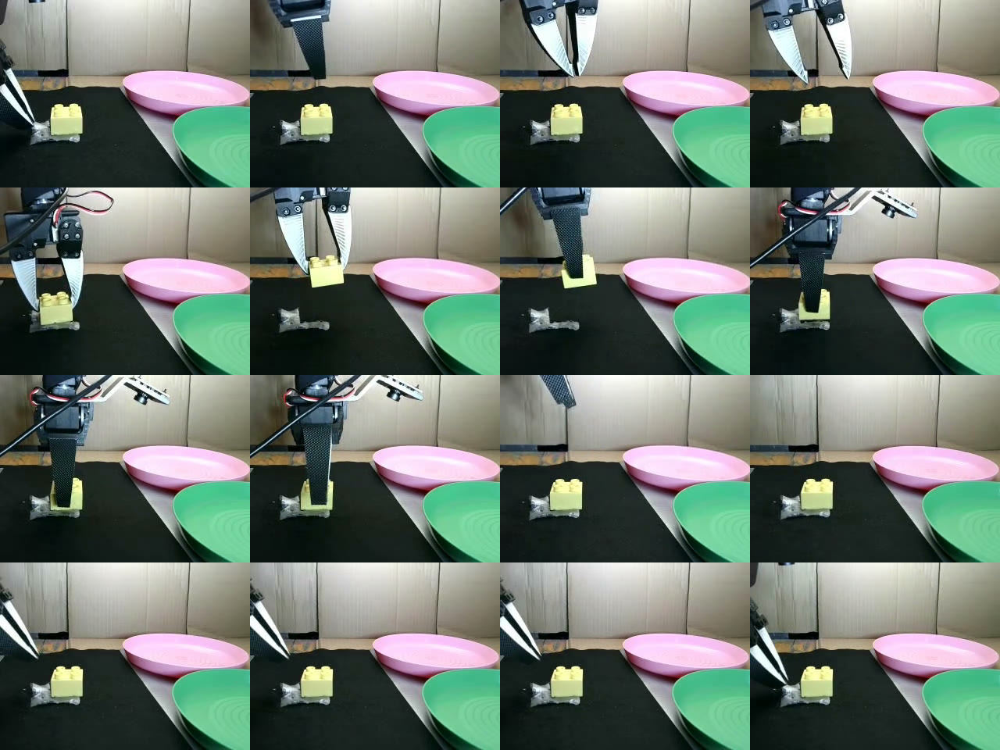
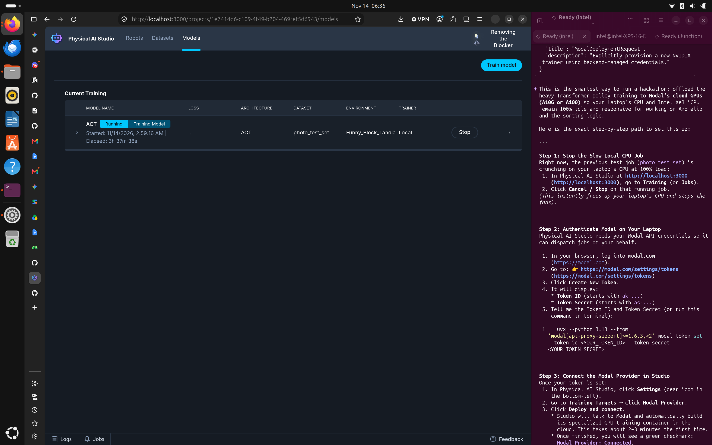
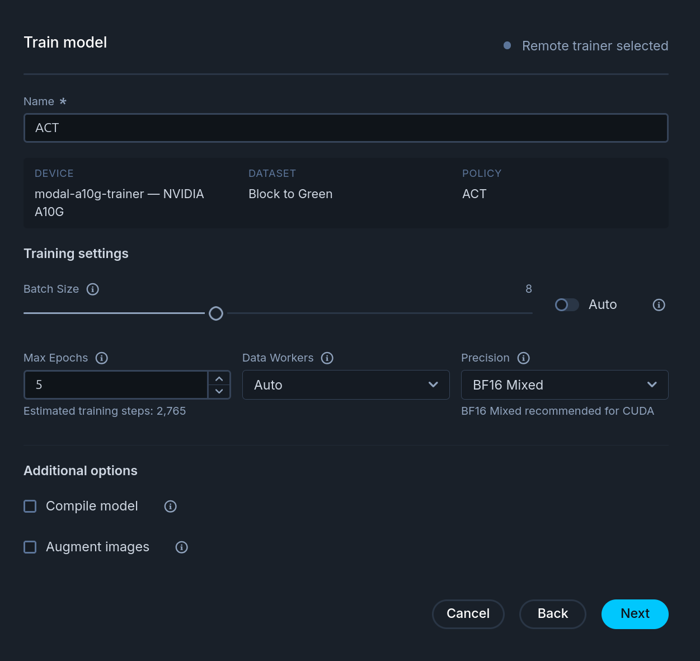

Arm motion
We taught the arm by showing it. A person moves the leader arm, the follower copies it, and Physical AI Studio records the joints and all three cameras. An ACT policy then learns to reproduce those movements from what the cameras see.
Two stages, three policies
ACT (Action Chunking Transformer) is an imitation-learning policy. Each step it looks at the three camera images and the arm's six joint positions, then predicts the next 100 joint targets in one go. We chose ACT over SmolVLA, a vision-language-action model that takes text instructions, because ACT trains in minutes and learns one fixed task reliably. SmolVLA was left as a follow-up.
| Stage | Policy | What it does | Demonstrations |
|---|---|---|---|
| Inspect | act_rotate_90 | Grasp the block, turn it 90°, release, return to the photo pose | 10 |
| Sort | act_place_green | Pick up the block and place it in the green (good) bowl | 22 |
act_place_pink | Pick up the block and place it in the pink (defect) bowl | 22 |
Splitting the job into short, single-purpose policies was deliberate. One policy per movement learns a clean, repeatable path. One policy that must choose between bowls mid-air tends to blend the two.
Demonstrations: what they look like
These are teleoperated recordings, the training data, not the trained policy acting alone.

Everything we recorded
14 datasets, 289 episodes and 867 videos (three cameras per episode), all exported with joint data by Lucas.
| Dataset | Episodes | Purpose |
|---|---|---|
90_degree_turn | 10 | Rotate policy |
block_to_green; also old_block_to_green, v2, v3, v4 | 22; 22, 25, 61, 6 | Place-green policy; other versions' roles to confirm |
block_to_pink; also v3, v4, v5 | 22; 6, 6, 12 | Place-pink policy; other versions' roles to confirm |
grip_master_v1 | 29 | To confirm (grasp practice?) |
theo_frames_to_crop, v2 | 10, 49 | Still photos for the defect model (task "Dot on block") |
photo_test_set | 9 | First test recording |
Confirm which dataset version trained each final policy. The config points at three exported model IDs but doesn't name their datasets.
Training


All three policies were trained and exported to OpenVINO on the robot laptop. The station's config file points at all three.
Did the policies work?
The team's engineering log says the rotate and sort commands "worked perfectly" when run from Physical AI Studio. They failed in our own control app, which couldn't get the camera and arm because Studio was still holding them. We have no video of a policy running on its own, and no training loss or success rate.
Find any phone video or screenshot of a policy moving the arm by itself, and the training loss from Studio or Modal. Without them this page can only claim "trained and exported", not "worked".
Sources: (section 6, step 5), (lines 35–37), (section 3), dataset READMEs under datasets/.